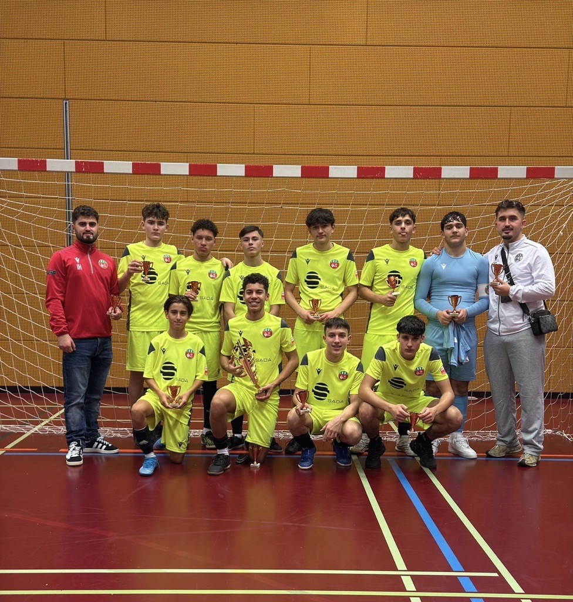

Turnier-Moment
Ein Spiel, in dem ich viel Verantwortung übernommen habe.
Highlights
Ein Spiel, in dem ich viel Verantwortung übernommen habe.
Ein besonderer Moment, der mir Selbstvertrauen gegeben hat.
Ein Erlebnis, das gezeigt hat, wie wichtig Zusammenhalt ist.

Erfolg entsteht nicht über Nacht. Es sind die schwierigen Momente, die Mentalität, Disziplin und wahre Stärke formen.
Best Moments
Für mich zählen nicht nur Tore oder Auszeichnungen, sondern auch Momente, in denen ich gelernt habe, Verantwortung zu übernehmen und als Spieler zu wachsen.